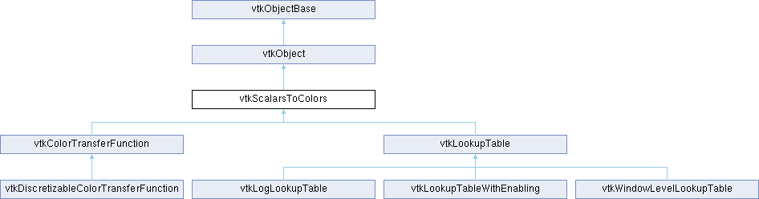

|
Etrek
|
|
Etrek
|
Superclass for mapping scalar values to colors. More...
#include <vtkScalarsToColors.h>

Public Types | |
| enum | VectorModes { MAGNITUDE = 0 , COMPONENT = 1 , RGBCOLORS = 2 } |
Public Member Functions | |
| vtkTypeMacro (vtkScalarsToColors, vtkObject) | |
| void | PrintSelf (ostream &os, vtkIndent indent) override |
| virtual void | Build () |
| virtual const unsigned char * | MapValue (double v) |
| virtual void | GetColor (double v, double rgb[3]) |
| double * | GetColor (double v) VTK_SIZEHINT(3) |
| virtual double | GetOpacity (double v) |
| double | GetLuminance (double x) |
| void | MapVectorsThroughTable (void *input, unsigned char *output, int inputDataType, int numberOfValues, int inputIncrement, int outputFormat, int vectorComponent, int vectorSize) |
| void | MapVectorsThroughTable (void *input, unsigned char *output, int inputDataType, int numberOfValues, int inputIncrement, int outputFormat) |
| void | MapScalarsThroughTable (vtkDataArray *scalars, unsigned char *output, int outputFormat) |
| void | MapScalarsThroughTable (vtkDataArray *scalars, unsigned char *output) |
| void | MapScalarsThroughTable (void *input, unsigned char *output, int inputDataType, int numberOfValues, int inputIncrement, int outputFormat) |
| virtual void | MapScalarsThroughTable2 (void *input, unsigned char *output, int inputDataType, int numberOfValues, int inputIncrement, int outputFormat) |
| virtual void | DeepCopy (vtkScalarsToColors *o) |
| virtual vtkTypeBool | UsingLogScale () |
| virtual vtkIdType | GetNumberOfAvailableColors () |
| virtual vtkIdType | SetAnnotation (vtkVariant value, vtkStdString annotation) |
| virtual vtkIdType | SetAnnotation (vtkStdString value, vtkStdString annotation) |
| vtkIdType | GetNumberOfAnnotatedValues () |
| vtkVariant | GetAnnotatedValue (vtkIdType idx) |
| vtkStdString | GetAnnotation (vtkIdType idx) |
| virtual void | GetAnnotationColor (const vtkVariant &val, double rgba[4]) |
| vtkIdType | GetAnnotatedValueIndex (vtkVariant val) |
| vtkIdType | GetAnnotatedValueIndexInternal (const vtkVariant &val) |
| virtual void | GetIndexedColor (vtkIdType i, double rgba[4]) |
| virtual bool | RemoveAnnotation (vtkVariant value) |
| virtual void | ResetAnnotations () |
| virtual vtkTypeBool | IsOpaque () |
| virtual vtkTypeBool | IsOpaque (vtkAbstractArray *scalars, int colorMode, int component) |
| virtual vtkTypeBool | IsOpaque (vtkAbstractArray *scalars, int colorMode, int component, vtkUnsignedCharArray *ghosts, unsigned char ghostsToSkip=0xff) |
| virtual double * | GetRange () VTK_SIZEHINT(2) |
| virtual void | SetRange (double min, double max) |
| virtual void | SetRange (const double rng[2]) |
| virtual void | SetAlpha (double alpha) |
| vtkGetMacro (Alpha, double) | |
| virtual VTK_NEWINSTANCE vtkUnsignedCharArray * | MapScalars (vtkDataArray *scalars, int colorMode, int component, int outputFormat=VTK_RGBA) |
| virtual VTK_NEWINSTANCE vtkUnsignedCharArray * | MapScalars (vtkAbstractArray *scalars, int colorMode, int component, int outputFormat=VTK_RGBA) |
| vtkSetMacro (VectorMode, int) | |
| vtkGetMacro (VectorMode, int) | |
| void | SetVectorModeToMagnitude () |
| void | SetVectorModeToComponent () |
| void | SetVectorModeToRGBColors () |
| vtkSetMacro (VectorComponent, int) | |
| vtkGetMacro (VectorComponent, int) | |
| vtkSetMacro (VectorSize, int) | |
| vtkGetMacro (VectorSize, int) | |
| virtual void | SetAnnotations (vtkAbstractArray *values, vtkStringArray *annotations) |
| vtkGetObjectMacro (AnnotatedValues, vtkAbstractArray) | |
| vtkGetObjectMacro (Annotations, vtkStringArray) | |
| vtkSetMacro (IndexedLookup, vtkTypeBool) | |
| vtkGetMacro (IndexedLookup, vtkTypeBool) | |
| vtkBooleanMacro (IndexedLookup, vtkTypeBool) | |
| template<> | |
| unsigned char | ColorToUChar (double t) |
| template<> | |
| unsigned char | ColorToUChar (float t) |
| Public Member Functions inherited from vtkObject | |
| vtkBaseTypeMacro (vtkObject, vtkObjectBase) | |
| virtual void | DebugOn () |
| virtual void | DebugOff () |
| bool | GetDebug () |
| void | SetDebug (bool debugFlag) |
| virtual void | Modified () |
| virtual vtkMTimeType | GetMTime () |
| void | RemoveObserver (unsigned long tag) |
| void | RemoveObservers (unsigned long event) |
| void | RemoveObservers (const char *event) |
| void | RemoveAllObservers () |
| vtkTypeBool | HasObserver (unsigned long event) |
| vtkTypeBool | HasObserver (const char *event) |
| vtkTypeBool | InvokeEvent (unsigned long event) |
| vtkTypeBool | InvokeEvent (const char *event) |
| std::string | GetObjectDescription () const override |
| unsigned long | AddObserver (unsigned long event, vtkCommand *, float priority=0.0f) |
| unsigned long | AddObserver (const char *event, vtkCommand *, float priority=0.0f) |
| vtkCommand * | GetCommand (unsigned long tag) |
| void | RemoveObserver (vtkCommand *) |
| void | RemoveObservers (unsigned long event, vtkCommand *) |
| void | RemoveObservers (const char *event, vtkCommand *) |
| vtkTypeBool | HasObserver (unsigned long event, vtkCommand *) |
| vtkTypeBool | HasObserver (const char *event, vtkCommand *) |
| template<class U, class T> | |
| unsigned long | AddObserver (unsigned long event, U observer, void(T::*callback)(), float priority=0.0f) |
| template<class U, class T> | |
| unsigned long | AddObserver (unsigned long event, U observer, void(T::*callback)(vtkObject *, unsigned long, void *), float priority=0.0f) |
| template<class U, class T> | |
| unsigned long | AddObserver (unsigned long event, U observer, bool(T::*callback)(vtkObject *, unsigned long, void *), float priority=0.0f) |
| vtkTypeBool | InvokeEvent (unsigned long event, void *callData) |
| vtkTypeBool | InvokeEvent (const char *event, void *callData) |
| virtual void | SetObjectName (const std::string &objectName) |
| virtual std::string | GetObjectName () const |
| Public Member Functions inherited from vtkObjectBase | |
| const char * | GetClassName () const |
| virtual vtkTypeBool | IsA (const char *name) |
| virtual vtkIdType | GetNumberOfGenerationsFromBase (const char *name) |
| virtual void | Delete () |
| virtual void | FastDelete () |
| void | InitializeObjectBase () |
| void | Print (ostream &os) |
| void | Register (vtkObjectBase *o) |
| virtual void | UnRegister (vtkObjectBase *o) |
| int | GetReferenceCount () |
| void | SetReferenceCount (int) |
| bool | GetIsInMemkind () const |
| virtual void | PrintHeader (ostream &os, vtkIndent indent) |
| virtual void | PrintTrailer (ostream &os, vtkIndent indent) |
| virtual bool | UsesGarbageCollector () const |
Static Public Member Functions | |
| static vtkScalarsToColors * | New () |
| template<typename T> | |
| static unsigned char | ColorToUChar (T t) |
| template<typename T> | |
| static void | ColorToUChar (T t, unsigned char *dest) |
| Static Public Member Functions inherited from vtkObject | |
| static vtkObject * | New () |
| static void | BreakOnError () |
| static void | SetGlobalWarningDisplay (vtkTypeBool val) |
| static void | GlobalWarningDisplayOn () |
| static void | GlobalWarningDisplayOff () |
| static vtkTypeBool | GetGlobalWarningDisplay () |
| Static Public Member Functions inherited from vtkObjectBase | |
| static vtkTypeBool | IsTypeOf (const char *name) |
| static vtkIdType | GetNumberOfGenerationsFromBaseType (const char *name) |
| static vtkObjectBase * | New () |
| static void | SetMemkindDirectory (const char *directoryname) |
| static bool | GetUsingMemkind () |
Protected Member Functions | |
| void | MapColorsToColors (void *input, unsigned char *output, int inputDataType, int numberOfValues, int numberOfComponents, int vectorSize, int outputFormat) |
| VTK_NEWINSTANCE vtkUnsignedCharArray * | ConvertToRGBA (vtkDataArray *colors, int numComp, int numTuples) |
| void | MapVectorsToMagnitude (void *input, double *output, int inputDataType, int numberOfValues, int numberOfComponents, int vectorSize) |
| virtual vtkIdType | CheckForAnnotatedValue (vtkVariant value) |
| virtual void | UpdateAnnotatedValueMap () |
| Protected Member Functions inherited from vtkObject | |
| void | RegisterInternal (vtkObjectBase *, vtkTypeBool check) override |
| void | UnRegisterInternal (vtkObjectBase *, vtkTypeBool check) override |
| void | InternalGrabFocus (vtkCommand *mouseEvents, vtkCommand *keypressEvents=nullptr) |
| void | InternalReleaseFocus () |
| Protected Member Functions inherited from vtkObjectBase | |
| virtual void | ReportReferences (vtkGarbageCollector *) |
| vtkObjectBase (const vtkObjectBase &) | |
| void | operator= (const vtkObjectBase &) |
Protected Attributes | |
| vtkAbstractArray * | AnnotatedValues |
| vtkStringArray * | Annotations |
| vtkInternalAnnotatedValueList * | AnnotatedValueList |
| vtkTypeBool | IndexedLookup |
| double | Alpha |
| int | VectorMode |
| int | VectorComponent |
| int | VectorSize |
| int | UseMagnitude |
| unsigned char | RGBABytes [4] |
| Protected Attributes inherited from vtkObject | |
| bool | Debug |
| vtkTimeStamp | MTime |
| vtkSubjectHelper * | SubjectHelper |
| std::string | ObjectName |
| Protected Attributes inherited from vtkObjectBase | |
| std::atomic< int32_t > | ReferenceCount |
| vtkWeakPointerBase ** | WeakPointers |
Additional Inherited Members | |
| Static Protected Member Functions inherited from vtkObjectBase | |
| static vtkMallocingFunction | GetCurrentMallocFunction () |
| static vtkReallocingFunction | GetCurrentReallocFunction () |
| static vtkFreeingFunction | GetCurrentFreeFunction () |
| static vtkFreeingFunction | GetAlternateFreeFunction () |
Superclass for mapping scalar values to colors.
vtkScalarsToColors is a general-purpose base class for objects that convert scalars to colors. This include vtkLookupTable classes and color transfer functions. By itself, this class will simply rescale the scalars.
The scalar-to-color mapping can be augmented with an additional uniform alpha blend. This is used, for example, to blend a vtkActor's opacity with the lookup table values.
Specific scalar values may be annotated with text strings that will be included in color legends using SetAnnotations, SetAnnotation, GetNumberOfAnnotatedValues, GetAnnotatedValue, GetAnnotation, RemoveAnnotation, and ResetAnnotations.
This class also has a method for indicating that the set of annotated values form a categorical color map; by setting IndexedLookup to true, you indicate that the annotated values are the only valid values for which entries in the color table should be returned. In this mode, subclasses should then assign colors to annotated values by taking the modulus of an annotated value's index in the list of annotations with the number of colors in the table.
|
inlinevirtual |
Perform any processing required (if any) before processing scalars. Default implementation does nothing.
Reimplemented in vtkDiscretizableColorTransferFunction, and vtkLookupTable.
|
protectedvirtual |
Allocate annotation arrays if needed, then return the index of the given value or -1 if not present.
|
inline |
Specializations of vtkScalarsToColors::ColorToUChar Converts from a color in a floating point type in range 0.0-1.0 to a uchar in range 0-255.
|
inlinestatic |
Converts a color from numeric type T to uchar. We assume the integral type is already in the range 0-255. If it is not, behavior is undefined. Floating point types are assumed to be in interval 0.0-1.0
|
protected |
An internal method used to convert a color array to RGBA. The method instantiates a vtkUnsignedCharArray and returns it. The user is responsible for managing the memory.
|
virtual |
Copy the contents from another object.
Reimplemented in vtkColorTransferFunction, and vtkLookupTable.
| vtkVariant vtkScalarsToColors::GetAnnotatedValue | ( | vtkIdType | idx | ) |
Return the annotated value at a particular index in the list of annotations. If there are no annotations, or idx is out-of-range, returns a default/invalid vtkVariant.
| vtkIdType vtkScalarsToColors::GetAnnotatedValueIndex | ( | vtkVariant | val | ) |
Return the index of the given value in the list of annotated values (or -1 if not present).
| vtkIdType vtkScalarsToColors::GetAnnotatedValueIndexInternal | ( | const vtkVariant & | val | ) |
Look up an index into the array of annotations given a value. Does no pointer checks. Returns -1 when val not present.
| vtkStdString vtkScalarsToColors::GetAnnotation | ( | vtkIdType | idx | ) |
Return the annotation at a particular index in the list of annotations. If there are no annotations, or idx is out-of-range, returns an empty string.
|
virtual |
Obtain the color associated with a particular annotated value (or NanColor if unmatched).
|
inline |
Map one value through the lookup table and return the color as an RGB array of doubles between 0 and 1.
|
virtual |
Map one value through the lookup table and store the color as an RGB array of doubles between 0 and 1 in the rgb argument.
Reimplemented in vtkColorTransferFunction, vtkDiscretizableColorTransferFunction, and vtkLookupTable.
|
virtual |
Get the "indexed color" assigned to an index.
The index is used in IndexedLookup mode to assign colors to annotations (in the order the annotations were set). Subclasses must implement this and interpret how to treat the index. vtkLookupTable simply returns GetTableValue(index % this->GetNumberOfTableValues()). vtkColorTransferFunction returns the color associated with node index % this->GetSize().
Note that implementations must set the opacity (alpha) component of the color, even if they do not provide opacity values in their colormaps. In that case, alpha = 1.0 should be used.
Reimplemented in vtkColorTransferFunction, vtkDiscretizableColorTransferFunction, and vtkLookupTable.
|
inline |
Map one value through the lookup table and return the luminance 0.3*red + 0.59*green + 0.11*blue as a double between 0 and 1. Returns the luminance value for the specified scalar value.
| vtkIdType vtkScalarsToColors::GetNumberOfAnnotatedValues | ( | ) |
Return the annotated value at a particular index in the list of annotations.
|
virtual |
Get the number of available colors for mapping to.
Reimplemented in vtkColorTransferFunction, vtkDiscretizableColorTransferFunction, and vtkLookupTable.
|
virtual |
Map one value through the lookup table and return the alpha value (the opacity) as a double between 0 and 1. This implementation always returns 1.
Reimplemented in vtkDiscretizableColorTransferFunction, and vtkLookupTable.
|
virtual |
Sets/Gets the range of scalars that will be mapped.
Reimplemented in vtkColorTransferFunction, and vtkLookupTable.
|
virtual |
Return true if all of the values defining the mapping have an opacity equal to 1. Default implementation returns true. The more complex signature will yield more accurate results.
Reimplemented in vtkDiscretizableColorTransferFunction, and vtkLookupTable.
|
protected |
An internal method that assumes that the input already has the right colors, and only remaps the range to [0,255] and pads to the desired output format. If the input has 1 or 2 components, the first component will be duplicated if the output format is RGB or RGBA. If the input has 2 or 4 components, the last component will be used for the alpha if the output format is RGBA or LuminanceAlpha. If the input has 3 or 4 components but the output is Luminance or LuminanceAlpha, then the components will be combined to compute the luminance. Any components past the fourth component will be ignored.
|
virtual |
Internal methods that map a data array into an unsigned char array. The output format can be set to VTK_RGBA (4 components), VTK_RGB (3 components), VTK_LUMINANCE (1 component, greyscale), or VTK_LUMINANCE_ALPHA (2 components). If not supplied, the output format defaults to RGBA. The color mode determines the behavior of mapping. If VTK_COLOR_MODE_DEFAULT is set, then unsigned char data arrays are treated as colors (and converted to RGBA if necessary); If VTK_COLOR_MODE_DIRECT_SCALARS is set, then all arrays are treated as colors (integer types are clamped in the range 0-255, floating point arrays are clamped in the range 0.0-1.0. Note 'char' does not have enough values to represent a color so mapping this type is considered an error); otherwise, the data is mapped through this instance of ScalarsToColors. The component argument is used for data arrays with more than one component; it indicates which component to use to do the blending. When the component argument is -1, then the this object uses its own selected technique to change a vector into a scalar to map.
| void vtkScalarsToColors::MapScalarsThroughTable | ( | vtkDataArray * | scalars, |
| unsigned char * | output, | ||
| int | outputFormat ) |
Map a set of scalars through the lookup table in a single operation. This method ignores the VectorMode and the VectorComponent. The output format can be set to VTK_RGBA (4 components), VTK_RGB (3 components), VTK_LUMINANCE (1 component, greyscale), or VTK_LUMINANCE_ALPHA (2 components) If not supplied, the output format defaults to RGBA.
|
virtual |
An internal method typically not used in applications. This should be a protected function, but it must be kept public for backwards compatibility. Never call this method directly.
Reimplemented in vtkColorTransferFunction, vtkDiscretizableColorTransferFunction, vtkLookupTable, and vtkLookupTableWithEnabling.
|
virtual |
Map one value through the lookup table and return a color defined as an RGBA unsigned char tuple (4 bytes).
Reimplemented in vtkColorTransferFunction, vtkDiscretizableColorTransferFunction, and vtkLookupTable.
| void vtkScalarsToColors::MapVectorsThroughTable | ( | void * | input, |
| unsigned char * | output, | ||
| int | inputDataType, | ||
| int | numberOfValues, | ||
| int | inputIncrement, | ||
| int | outputFormat, | ||
| int | vectorComponent, | ||
| int | vectorSize ) |
Map vectors through the lookup table. Unlike MapScalarsThroughTable, this method will use the VectorMode to decide how to map vectors. The output format can be set to VTK_RGBA (4 components), VTK_RGB (3 components), VTK_LUMINANCE (1 component, greyscale), or VTK_LUMINANCE_ALPHA (2 components)
|
protected |
An internal method for converting vectors to magnitudes, used as a preliminary step before doing magnitude mapping.
|
overridevirtual |
Methods invoked by print to print information about the object including superclasses. Typically not called by the user (use Print() instead) but used in the hierarchical print process to combine the output of several classes.
Reimplemented from vtkObject.
Reimplemented in vtkWindowLevelLookupTable.
|
virtual |
Remove an existing entry from the list of annotated values.
Returns true when the entry was actually removed (i.e., it existed before the call). Otherwise, returns false.
|
virtual |
Remove all existing values and their annotations.
|
virtual |
Specify an additional opacity (alpha) value to blend with. Values != 1 modify the resulting color consistent with the requested form of the output. This is typically used by an actor in order to blend its opacity. Value is clamped between 0 and 1.
Reimplemented in vtkDiscretizableColorTransferFunction.
|
virtual |
This variant of SetAnnotation accepts the value as a string so ParaView can treat annotations as string vector arrays.
|
virtual |
Add a new entry (or change an existing entry) to the list of annotated values. Returns the index of value in the list of annotations.
|
virtual |
Set a list of discrete values, either as a categorical set of values (when IndexedLookup is true) or as a set of annotations to add to a scalar array (when IndexedLookup is false). The two arrays must both either be nullptr or of the same length or the call will be ignored.
Note that these arrays are deep copied rather than being used directly in order to support the use case where edits are made. If the values and annotations arrays were held by this class then each call to map scalar values to colors would require us to check the MTime of the arrays.
|
virtual |
Reimplemented in vtkColorTransferFunction.
|
protectedvirtual |
Update the map from annotated values to indices in the array of annotations.
|
inlinevirtual |
This should return 1 if the subclass is using log scale for mapping scalars to colors. Default implementation always returns 0.
Reimplemented in vtkDiscretizableColorTransferFunction, and vtkLookupTable.
| vtkScalarsToColors::vtkSetMacro | ( | IndexedLookup | , |
| vtkTypeBool | ) |
Set/get whether the lookup table is for categorical or ordinal data. The default is ordinal data; values not present in the lookup table will be assigned an interpolated color.
When categorical data is present, only values in the lookup table will be considered valid; all other values will be assigned NanColor.
| vtkScalarsToColors::vtkSetMacro | ( | VectorComponent | , |
| int | ) |
If the mapper does not select which component of a vector to map to colors, you can specify it here.
| vtkScalarsToColors::vtkSetMacro | ( | VectorMode | , |
| int | ) |
Change mode that maps vectors by magnitude vs. component. If the mode is "RGBColors", then the vectors components are scaled to the range and passed directly as the colors.
| vtkScalarsToColors::vtkSetMacro | ( | VectorSize | , |
| int | ) |
When mapping vectors, consider only the number of components selected by VectorSize to be part of the vector, and ignore any other components. Set to -1 to map all components. If this is not set to -1, then you can use SetVectorComponent to set which scalar component will be the first component in the vector to be mapped.